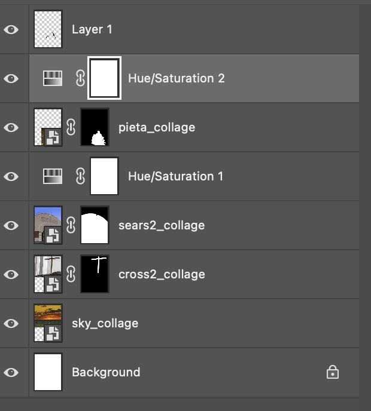

In this collage, I intend to portray consumerism as a church through visual metaphor. When selecting images, it struck me how the curved arch of an abandoned Sears building emulated that of an arch in a church displaying statues. To emphasize the church like architecture of this building, I added a cross in the background. I chose to use the Pieta in this case, a statue which portrays St. Mary holding the deceased body of Jesus, symbolizing pity and sorrow. I employed masking to separate the parts of my source images I didn’t want in the collage and used blending modes on the cross and the statue to make them look more cohesive with the rest of the picture. I want to be clear that my use of Christian imagery isn’t meant to disrespect religious symbols and their meaning, but only to contextualize these meanings in a new way the face of consumerism. Just as religious symbols are often co-opted to justify politics and science, I intend to subversively co-opt them myself to make a statement. In capitalist society, a trip to the mall can be almost an act of worship. We are forced to frame our lives around monetary earning and the exchange of money is the ultimate form of prayer: we offer up so much of it with hopes that material possessions that we are getting in return will be worth it. However, most of it will eventually become garbage and our lives return to sorrow and emptiness if we do not find more meaningful aspects of living to fill them up with. All the images I used are from wikimedia commons.
Back to Home
Image 2